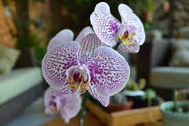
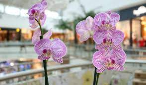
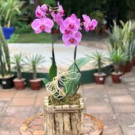

orquidea
As orquídeas são um dos grupos de plantas mais diversos e fascinantes do reino vegetal. Com uma beleza exótica e uma infinidade de cores e formas, essas flores encantam entusiastas de jardinagem e colecionadores em todo o mundo. Originárias de diversas regiões do globo, as orquídeas têm uma história rica e uma variedade surpreendente de adaptações e características únicas. Seu cultivo pode ser um desafio, mas a recompensa de ver essas maravilhosas flores em plena floração é verdadeiramente gratificante.
Características e Variedades:
a.gif)
Formas e Tamanhos: As orquídeas vêm em uma ampla variedade de formas, tamanhos e estruturas. Algumas têm flores pequenas e delicadas, enquanto outras apresentam flores grandes e vistosas.
Cores Deslumbrantes: Uma das características mais notáveis das orquídeas é a incrível diversidade de cores em suas flores. Elas podem variar desde tons suaves e pastéis até cores vivas e intensas, como o azul, roxo, rosa, amarelo e branco.
Adaptações Únicas: As orquídeas têm várias adaptações notáveis que lhes permitem prosperar em diferentes ambientes. Algumas são epífitas, crescendo sobre árvores e rochas, enquanto outras são terrestres ou litófitas, crescendo diretamente no solo ou em pedras.
Estruturas Complexas: As flores de orquídeas são conhecidas por sua complexidade e simetria. Muitas espécies têm estruturas especializadas, como o labelo, que desempenha um papel importante na atração de polinizadores.
Perfumes Atraentes: Algumas orquídeas emitem perfumes atraentes para atrair insetos polinizadores, o que é uma estratégia engenhosa para garantir sua reprodução.
Habitat e Cultivo:
Distribuição Global: As orquídeas são encontradas em quase todos os continentes, com exceção da Antártida. Elas estão presentes em uma variedade de habitats, desde florestas tropicais até regiões áridas e montanhas elevadas.
Cultivo em Casa: Muitas espécies de orquídeas podem ser cultivadas em ambientes domésticos, desde que suas necessidades específicas sejam atendidas. O cultivo de orquídeas é uma arte que requer paciência e atenção aos detalhes.
Luz e Umidade: A maioria das orquídeas prefere luz indireta e alta umidade. Elas podem prosperar em janelas orientadas para o leste ou oeste, onde recebem luz solar filtrada durante o dia.
Fertilização: As orquídeas têm necessidades nutricionais específicas. Fertilizantes formulados especialmente para orquídeas podem ser aplicados durante o período de crescimento ativo para garantir um bom desenvolvimento da planta.
Usos e Aplicações:
Decoração e Presente: As orquídeas são frequentemente usadas como flores de corte em arranjos florais elegantes. Elas também são presentes populares, simbolizando amor, beleza e refinamento.
Medicina Tradicional: Algumas espécies de orquídeas têm sido usadas na medicina tradicional em várias culturas para tratar problemas de saúde, como doenças respiratórias e digestivas.
Horticultura e Competições: eO cultivo de orquídeas é uma atividade altamente especializada e competitiva. Exposições e competições de orquídeas são realizadas em todo o mundo, onde criadores exibem suas melhores plantas para avaliação e reconhecimento.
Jardinagem: Os lírios são plantas perenes que podem ser cultivadas em jardins, canteiros e recipientes, adicionando um toque exuberante de beleza ao paisagismo.
Conclusão: As orquídeas são verdadeiras obras de arte da natureza, cativando pessoas há séculos com sua elegância, cores deslumbrantes e formas exóticas. Seu cultivo pode ser desafiador, mas a dedicação e o cuidado dispensados a essas flores magníficas são recompensados com a beleza incomparável de suas flores em plena floração. Além de sua importância estética, as orquídeas têm um papel essencial nos ecossistemas naturais, desempenhando um papel vital na polinização e preservação da biodiversidade.